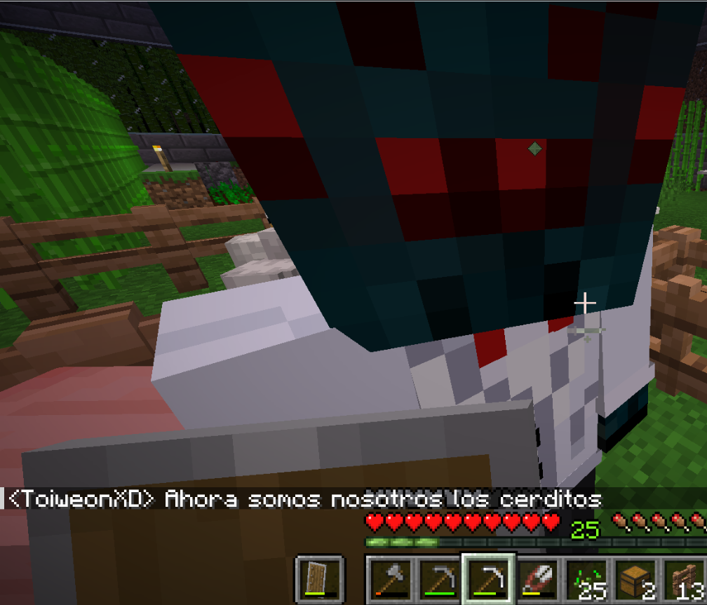

I'm studying to become a fullstack web developer and I like learning by building things: web pages, small programs and projects that grow as they go. Away from code, I'm usually playing something, watching some football/soccer or writing
I keep this page My way, with no rush and changing it whenever I feel like it.

The Minecraft experience
What interests me
ProgrammingWebs and personal projects
Video gamesRocket League, TETR.IO, Geometry Dash...
FootballI mostly support my local team with all my heart
WritingNot much, but when I'm inspired I won't stop
MusicTechno and others, I don't really know how to define my music taste